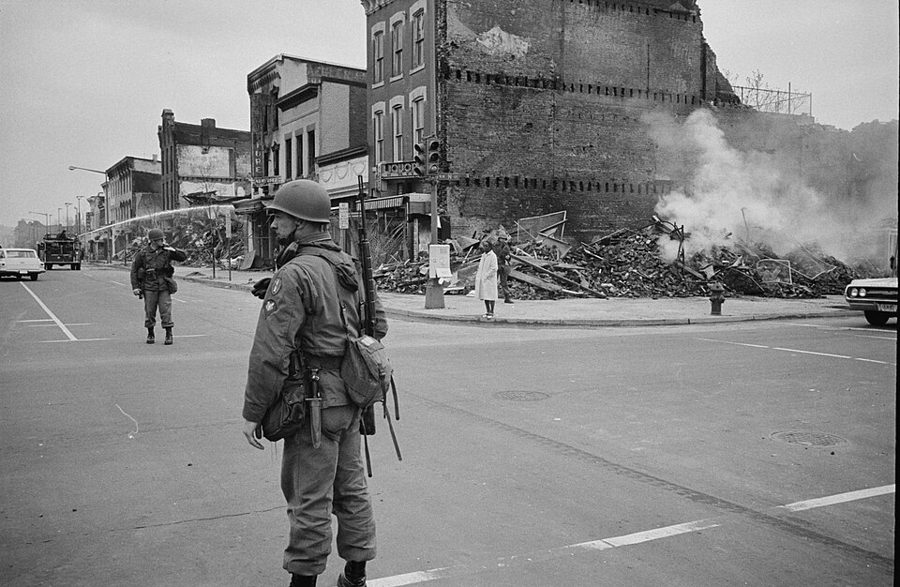
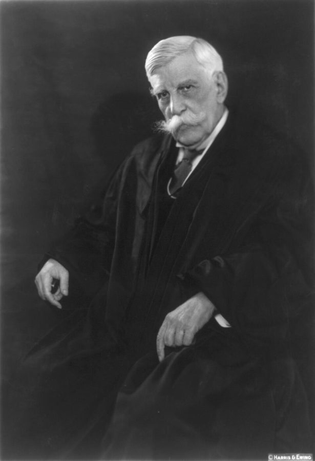

1964 年 7 月 2 日，约翰逊总统在白宫签署《民权法案》，身后站着马丁·路德·金。Cecil Stoughton, White House Press Office (WHPO)，公有领域，维基共享资源
《民权法案》（Civil Rights Act of 1964）禁止在雇用、公共场所等方面按种族区别对待。此后「平权措施」（affirmative action）逐步成形：到 1970 年代初，联邦政府要求和它有合同往来的机构，包括大学，为雇用少数族裔定出数字目标和完成期限，这就是书里带引号的 goals and timetables。
批评者把这类做法叫 quotas（配额），作者用的就是这个词。
1964 年的索维尔，也就是法案签署那年。他已经教过两年书，博士论文还没写完。Internet Archive Book Images，公有领域，维基共享资源斯坦福的胡佛塔。Knowledge and Decisions 给他换来了这里的职位，不用再教课。King of Hearts，CC BY-SA 3.0，维基共享资源
1960 年代的城市骚乱

1968 年 4 月 8 日，华盛顿西北区第 7 街和 N 街的路口，骚乱后站岗的士兵。Warren K. Leffler，公有领域，维基共享资源
1965 年洛杉矶瓦茨区，1967 年纽瓦克和底特律，1968 年 4 月马丁·路德·金遇刺后的一百多个城市，黑人聚居区接连发生骚乱，纵火和抢掠的对象多是本街区的商店。
书里只说 Charles 遇上的是其中一次，没有说哪一次；他住在华盛顿。上面的照片是那几年的样子，不是指认那一天。
霍姆斯大法官

小奥利弗·温德尔·霍姆斯，约 1930 年。Harris & Ewing，公有领域，维基共享资源
全书最后一句话不是作者的，是 Oliver Wendell Holmes Jr.（1841–1935）的。他年轻时在南北战争中三次负伤，1902 到 1932 年任联邦最高法院大法官，以文笔和简短有力的判词出名。Justice 放在人名前是大法官的头衔，不是「正义」。
Dear Abby 是 1956 年开始的报纸专栏，读者写信求教生活难题，署名 Abigail Van Buren 的专栏作者作答。
clever media interviewers
… Nevertheless, clever media interviewers insisted on …
「聪明」的记者们
反话。clever 在这里是「自以为问得刁」。
welfare mother
… to the welfare mother or to …
靠救济金养孩子的母亲
welfare 在美国特指政府发给穷人的救济，不是泛泛的「福利」。这是当时媒体的固定说法。
I cannot imagine what would have led
… I cannot imagine what would have …
我实在想不出是什么让人……
不是真的在纳闷，是说「这想法没道理」。和 wasn’t overjoyed 一样要反着读。
a relative handful
… to a relative handful of middle-class …
相对来说很少的一些人
relative 是形容词「相对的」，和亲戚无关。handful = 一小撮。
red herrings
… evaded by red herrings about “bootstraps” …
转移视线的话头
字面是熏鲱鱼，气味重，传说能把猎犬引离踪迹。辩论里指把人从正题上引开的东西。
by and large
… By and large, my books on …
大体上
三个词都认识，合起来 = on the whole。
intellectual outlet
… written as an intellectual outlet, but …
施展智力的出口
outlet 不是商店，是「发泄、施展的渠道」。他说写种族题目不是为了过瘾。
amateur psychology
… however fashionable amateur psychology has become. …
外行的心理分析
指拿一个人的身世去解释他的观点。作者在一本回忆录的结尾说这句，是提醒读者别这样读他。
stand or fall on its own merits
… stands or falls on its own …
成不成立，全看它本身对不对
merits 是「是非曲直」，不是「优点」。法律用语里 on the merits 指就案件本身来判。
send a spark
… I had sent a spark to …
传下去一点火星
霍姆斯的话。those who come after 是后来的人。If I could think … I should be ready 是老派的虚拟语气，should = would。
值得停下来的句子
“You went to the same building I went to, but it was no longer the same school.”— 第 23 段，侄女说「我上的是你上过的那所学校」，他这样回答。本站译：「你进的是我进过的那栋楼，可那已经不是同一所学校了。」
building 和 school 平时可以互换，这里被拆开：楼是砖，学校是里面的老师、规矩和同学。下一段他对「家」做了同样的事：同一间公寓，已经不是同一个家。
全章讲「时机」的地方很多，这一句最短。它也解释了他为什么不劝别人照他的路走：路标还在，路没了。这是他的判断，读者可以带着自己的看法读。
That kind of luck cannot be planned.— 第 28 段，说自己入行的年份。本站译：这种运气是安排不来的。
七个词，被动语态，没有主语「我」。Preface 里女儿说他靠的是 Luck，他答「至少部分如此」；隔了十二章，这是他自己把话说满的地方。
注意他说的是哪一种运气：不是化险为夷那种，是早几年晚几年就不一样的那种。前一句的 right after … and just before … 把这个窗口的两头都标了出来。